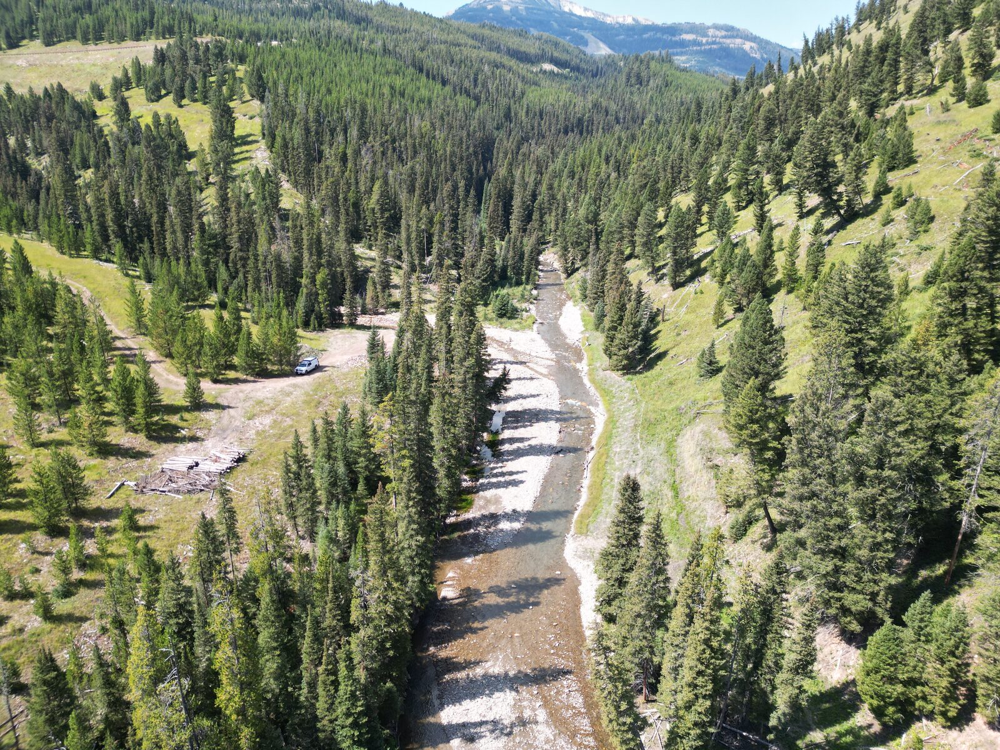
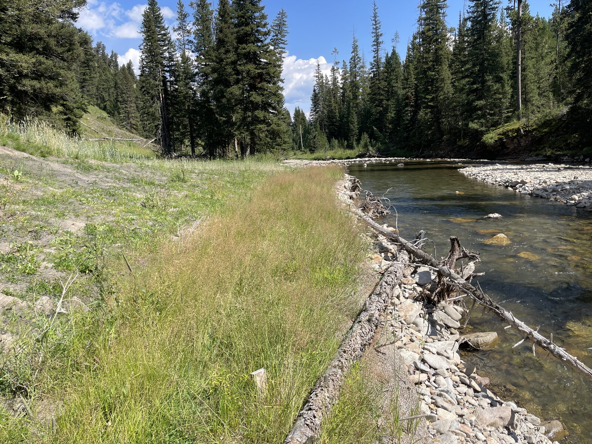
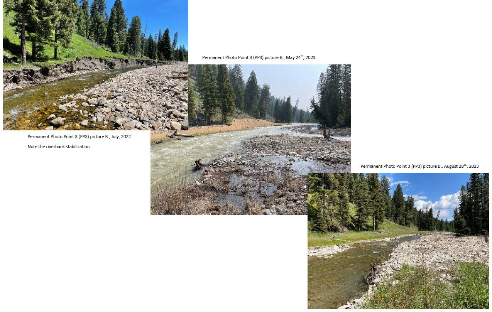
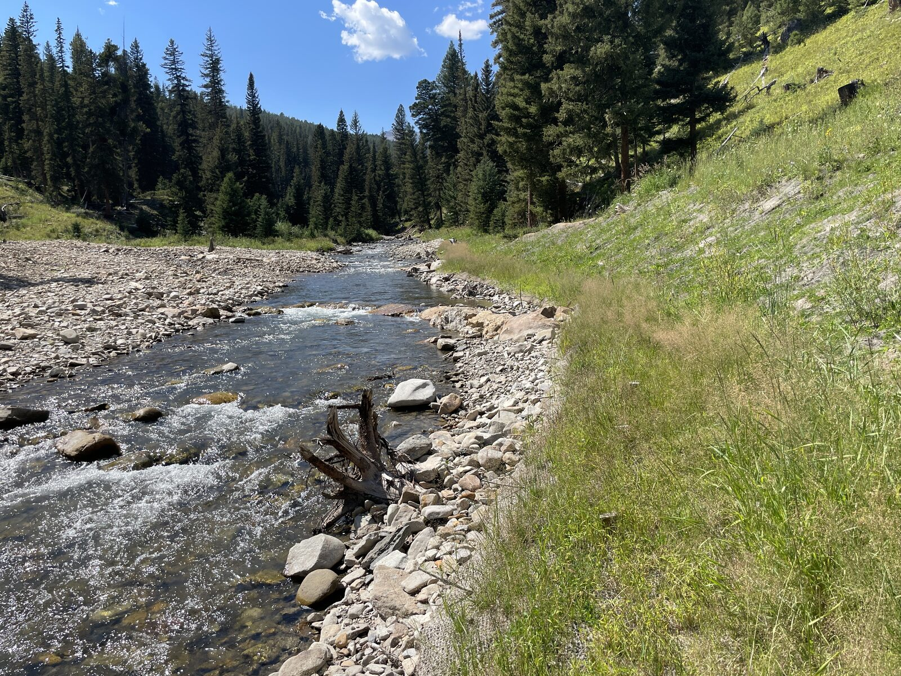
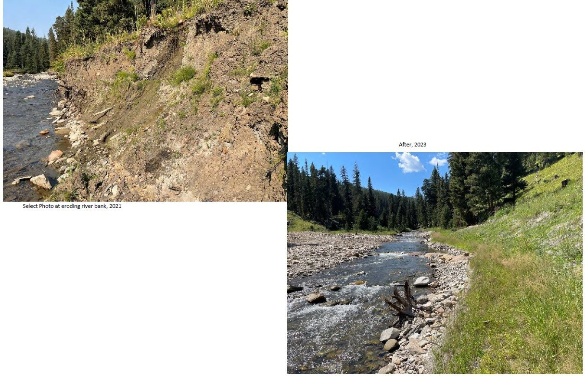
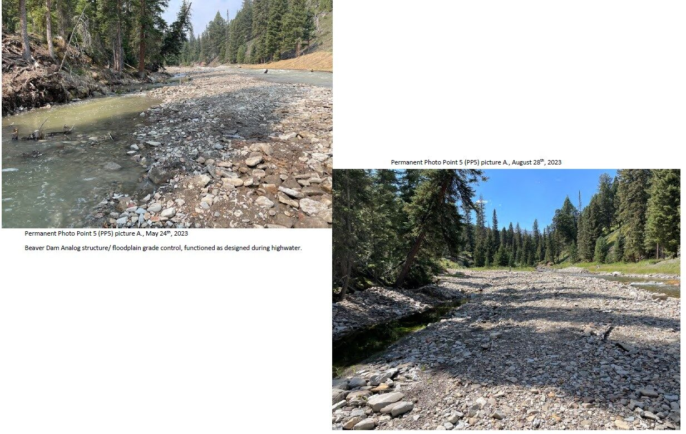
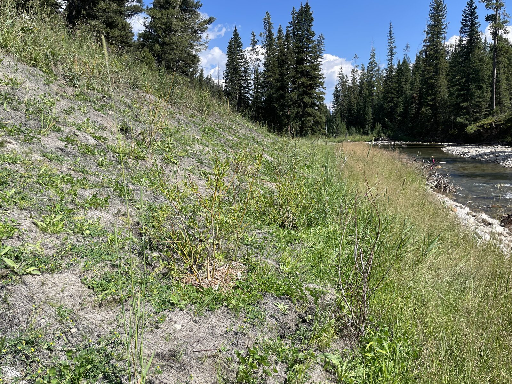
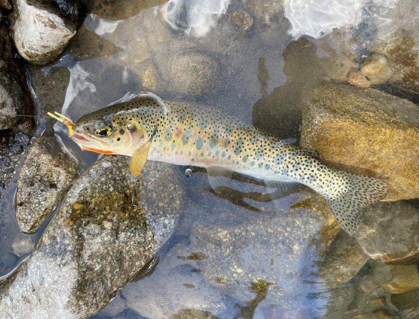
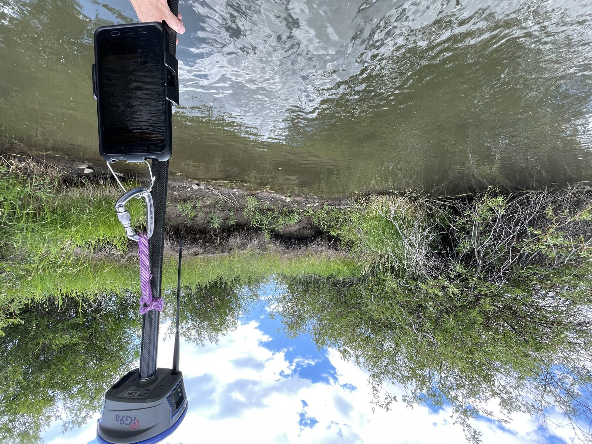

Unique, insightful, cost effective
Featured Projects
Below you'll find some selected projects that TWR has designed or that are in progress.
2nd Yellow Mule and South Fork Gallatin River
Riverbank fix and fish habitat enhancement — previous landslide area, riverbank erosion, excessive deposits of rock and lack of fish habitat. Project construction completed in November 2022. Photos represent before construction and monitoring year one, 2023.








Green Canyon Creek, Gallatin County, MT
Jurisdiction delineation, fluvial geomorphic assessment, design, permitting and construction oversight.
